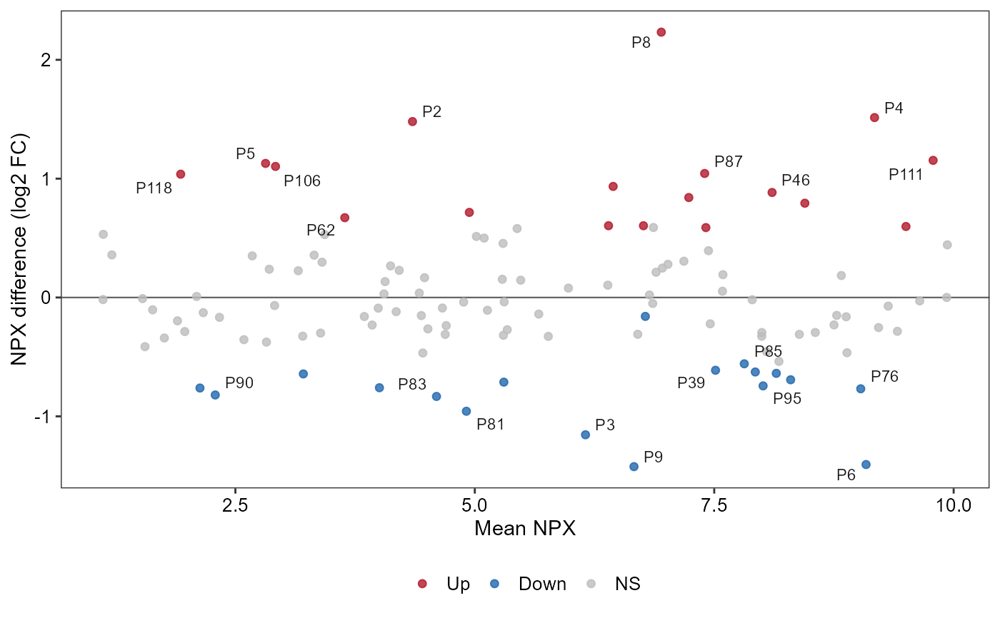

MA plot: NPX difference (log2 fold change) against mean NPX abundance
Source:R/plot_omics_extra.R
plot_ma.RdPlots each protein's fold change / NPX difference against its average abundance, coloured by direction and significance. Complements [plot_volcano()] by revealing intensity-dependent bias across the dynamic range of an Olink panel.
Usage
plot_ma(
data,
mean_col = NULL,
fc_col = NULL,
pval_col = NULL,
assay_col = NULL,
pval_threshold = 0.05,
fc_threshold = 0,
max_labels = 10,
colors = c(Up = "#B2182B", Down = "#2166AC", NS = "#BDBDBD"),
title = NULL,
xlab = "Mean NPX",
ylab = "NPX difference (log2 FC)"
)Arguments
- data
A data.frame of differential-expression results (e.g. from limma, OlinkAnalyze, or `bansal_univariate`).
- mean_col
Name of the column holding mean abundance (e.g. `"AveExpr"`, `"MeanNPX"`). If `NULL`, auto-detected from common names.
- fc_col
Name of the column holding the log2 fold change / NPX difference (default `"estimate"` or auto-detected).
- pval_col
Name of the p-value or adjusted p-value column (default `"Adjusted_pval"` or auto-detected).
- assay_col
Name of the assay/protein label column (default `"Assay"`).
- pval_threshold
Significance threshold on `pval_col` (default `0.05`).
- fc_threshold
Minimum absolute `fc_col` to highlight as Up / Down (default `0`). When `> 0`, dashed horizontal lines are drawn at `+/- fc_threshold`.
- max_labels
Maximum number of top significant proteins per side to label (default `10`). Set to `0` to disable labels.
- colors
Named character vector of length 3 for `Up`, `Down`, `NS`.
- title
Optional plot title.
- xlab, ylab
Axis titles.
Examples
set.seed(1)
de <- data.frame(
Assay = paste0("P", 1:120),
MeanNPX = runif(120, 1, 10),
estimate = rnorm(120, 0, 0.5)
)
de$estimate[1:10] <- de$estimate[1:10] + sample(c(-1.5, 1.5), 10, TRUE)
de$Adjusted_pval <- pmin(1, 10^(-abs(de$estimate) * 2.2) * runif(120, 0.1, 2))
plot_ma(de, mean_col = "MeanNPX", fc_col = "estimate", pval_col = "Adjusted_pval")
